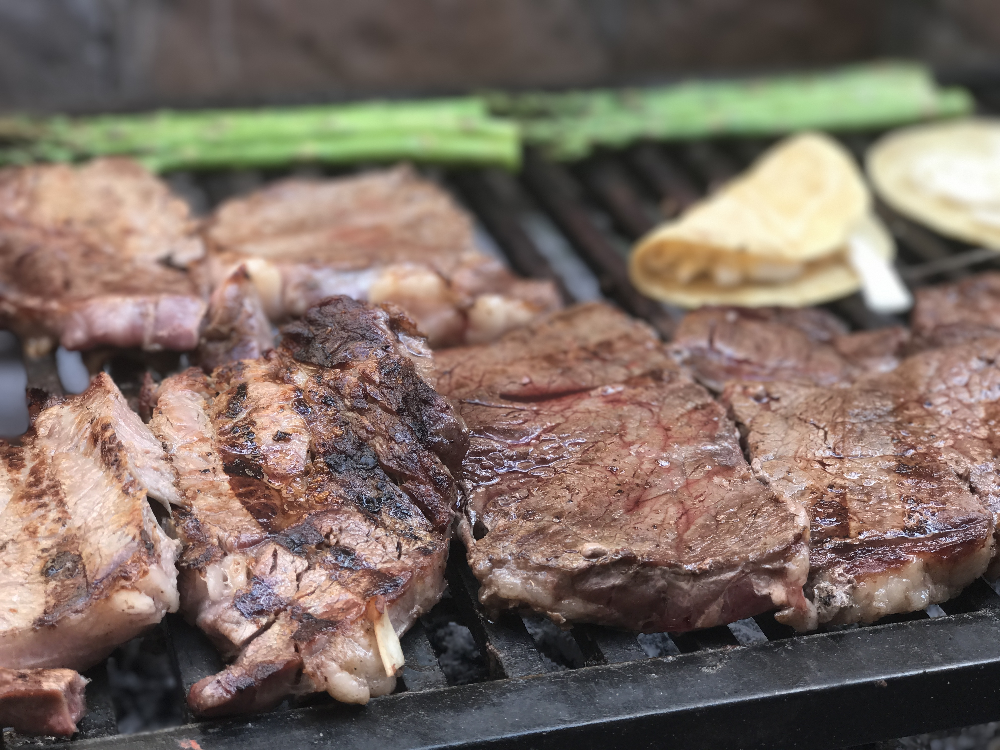

Carne Asada

Description
Marinated Carne Asada that's grilled alongside charred tortaillas and vegetables.
Ingredients
- 3 Tbsp of Soy Sauce
- 2 Tbsp of Distilled White Vinegar
- 2 Tbsp of Lime Juice
- 2 Tbsp of Olive Oil
- 1/2 cup of Cilantro
- 2 Cloves of Garlic
- 1/4 of a Jalapeno
- Pinch of Salt
- 1/2 tsp of Ground Cumin
- 1/2 tsp of Oregano
- 1-1/4 lb of skirt steak or flank
Steps
- Add the cilantro, jalapeno and garlic into a small food processor and pulse until really finely chopped.
- In a medium size bowl, add all the remaining ingredients for the marinade along with the chopped cilantro
mixture, stir well and then add the steak into the marinade, making sure it’s well coated and covered by
the marinade, cover and pop in the fridge for a minimum of 4 hours.
- Allow the steak to come to room temperature for about 15 minutes before cooking, meanwhile get your grill
nice and hot.
- Shake off any excess marinade and grill the steak for a few minutes on each side or until you’ve reached
your desired temperature. Grill some peppers, onions and jalapeno alongside the steak and char some
tortillas as well.
- Round out the platter with some avocado and fresh cilantro and lime all over the whole thing and dig in!